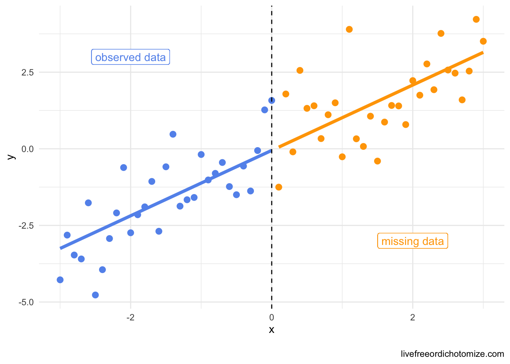
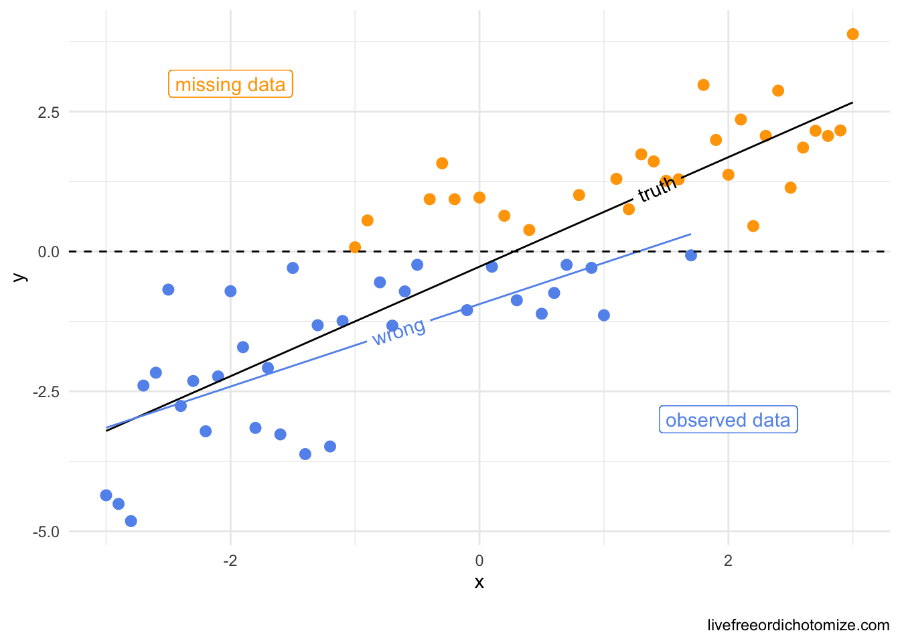

library(tidyverse)
n <- 1000000
set.seed(1)
data <- tibble(
x = rnorm(n),
c = rnorm(n),
y = x + rnorm(n)
)Here is the scenario: You are trying to predict some outcome, \(y\), and some of your predictors have missing data. Will doing a complete case analysis give you unbiased results? What additional information do you need before deciding?
For some reason, when I tried to answer this question, my first instinct was to try to decide whether the data were missing at random, but it turns out, this might not be the right first question! Why? Complete case analysis will give us unbiased estimates even if the data are not missing at random. Excuse me? Yes. When is this the case? When:
- The missingness is not dependent on the outcome (this one seems like it should hold if we are using proper predictors, since in order to predict y they should precede y, making the value of y unable to determine their missingness, (I think!)).
- You have correctly specified your model
- Your outcome doesn’t have any missing data (this is more extreme than the actual assumption needed, but if there is no missing outcome data then you should definitely be ok, see below for the nuance)
When I was thinking through this, I found it helped to work up a few short simulations, so here we go.
Scenario 1: I have a predictor that is missing not at random
First let’s generate our “true” values. Here the true model is below, which shows that:
\(y = x + \varepsilon\)
In other words, \(\beta_0: 0\) and \(\beta_1: 1\)
Let’s force x to be missing under three scenarios:
- Missing completely at random
- Missing conditionally at random (based on
c) - Missing not at random
data <- data |>
mutate(
x_obs_mcar = ifelse(
rbinom(n, 1, 0.5),
NA,
x
),
x_obs_mar = ifelse(
rbinom(n, 1, 1 / (1 + exp(-c))),
NA,
x
),
x_obs_mnar = ifelse(
rbinom(n, 1, 1 / (1 + exp(-x))),
NA,
x
)
)
data |>
summarise(mcar_miss = mean(is.na(x_obs_mcar)),
mar_miss = mean(is.na(x_obs_mar)),
mnar_miss = mean(is.na(x_obs_mnar)))# A tibble: 1 × 3
mcar_miss mar_miss mnar_miss
<dbl> <dbl> <dbl>
1 0.501 0.500 0.501In all three cases ~50% of the data are missing.
Let’s see how these impact the ability to predict y (and the estimation of \(\hat\beta\))
lm(y ~ x_obs_mcar, data = data)
Call:
lm(formula = y ~ x_obs_mcar, data = data)
Coefficients:
(Intercept) x_obs_mcar
-0.00104 0.99964 Ok, the missing completely at random x is estimated correctly when we do a complete cases analysis (that is when we list-wise delete every row that has missing data). This checks out!
Let’s check out the missing conditionally at random x. Note that this is missing at random after conditioning on c (although we aren’t actually doing anything with c at this point, so it might as well be missing not at random…)
lm(y ~ x_obs_mar, data = data)
Call:
lm(formula = y ~ x_obs_mar, data = data)
Coefficients:
(Intercept) x_obs_mar
-0.000482 0.999835 Whoa! Prediction is still correct and the coefficients themselves are still unbiased even if we do complete case analysis.
Ok, what about missing not at random?
lm(y ~ x_obs_mnar, data = data)
Call:
lm(formula = y ~ x_obs_mnar, data = data)
Coefficients:
(Intercept) x_obs_mnar
-7.23e-05 9.99e-01 Still ok! No bias in the coefficients and the predicted values are unbiased even though the predictor was missing not at random (and we did a complete cases analysis).
Why is this the case? Travis Gerke pointed out this excellent paper that has a beautiful plot that demonstrates why this happens. I am going to simulate some smaller data than what I have above to demonstrate the point. Here, the missingess is deterministic (and definitely not random!) – if x is greater than 0, it is missing, otherwise it isn’t. Again, this renders ~50% of our data missing.
data <- tibble(
x = seq(-3, 3, by = 0.1),
y = x + rnorm(61),
x_miss = ifelse(x > 0, "yes", "no")
)
ggplot(data, aes(x = x, y = y, color = x_miss)) +
geom_point() +
geom_line(aes(x = x, y = predict(lm(y ~ x, data = data)))) +
geom_vline(xintercept = 0, lty = 2) +
scale_color_manual(values = c("cornflowerblue", "orange")) +
geom_label(aes(x = -2, y = 3), label = "observed data", color = "cornflowerblue") +
geom_label(aes(x = 2, y = -3), label = "missing data") +
theme_minimal() +
theme(legend.position = "none")
Maybe this result is a somewhat obvious result because despite the fact that the missingness was not at random, it had nothing to do with the outcome, y, let’s see what would happen if c was related to y.
Scenario 2: I have missing data that is missing due to some factor (and other things, so still not MAR)
set.seed(1)
data <- tibble(
x = rnorm(n),
c = rnorm(n),
y = x + c + rnorm(n)
)Let’s say we have some data that is not missing at random. The probability that x is missing is dependent both on it’s own value (MNAR!) and the value of c.
data <- data |>
mutate(x_obs = ifelse(
rbinom(n, 1, 1 / (1 + exp(-(x + c)))),
NA,
x
)
)This results in missing ~ 50% of the values for x:
data |>
count(miss_x = is.na(x_obs))# A tibble: 2 × 2
miss_x n
<lgl> <int>
1 FALSE 499277
2 TRUE 500723So what happens if we try to predict y? Let’s try it first with the full data as a benchmark:
right_mod <- lm(y ~ x + c, data = data)right_mod
Call:
lm(formula = y ~ x + c, data = data)
Coefficients:
(Intercept) x c
-0.000162 1.000106 0.999592 Beautiful. we get the correct \(\hat\beta\) estimates (and thus the correct predictions for y).
Now let’s take a look at the complete case analysis:
data_cc <- na.omit(data)
cc_mod <- lm(y ~ x + c, data = data_cc)cc_mod
Call:
lm(formula = y ~ x + c, data = data_cc)
Coefficients:
(Intercept) x c
0.00128 1.00032 1.00156 Would you look at that. Correct coefficients! How could we break that? If we misspecified the model, for example if we didn’t adjust for c:
lm(y ~ x, data = data_cc)
Call:
lm(formula = y ~ x, data = data_cc)
Coefficients:
(Intercept) x
-0.419 0.849 But is this a terribly interesting case? If we didn’t have c, then we couldn’t impute based on it anyways, so we would be in trouble imputation or not!
Scenario 3: What about inference?
This is the same as above, but I found it helpful to frame as an inference question. What if I have some treatment, x that is randomly assigned, but is missing based on some factor c that is related to my outcome of interest, y.
set.seed(1)
data <- tibble(
x = rbinom(n, 1, 0.5), # randomly assigned exposure
c = rnorm(n), # problem variable
y = x + c + rnorm(n), # true treatment effect is 1
x_obs = ifelse(rbinom(n, 1, 1 / (1 + exp(-(x + c)))),
NA, x) # missing based on x and c
)First of all, in the absense of any missing data we don’t actually need to adjust for c in order to get an unbiased estimate for x because c is not a confounder (yay!).
lm(y ~ x, data = data)
Call:
lm(formula = y ~ x, data = data)
Coefficients:
(Intercept) x
0.000368 0.998409 BUT! With missing data, we do have a problem:
data_cc <- na.omit(data)
lm(y ~ x, data = data_cc)
Call:
lm(formula = y ~ x, data = data_cc)
Coefficients:
(Intercept) x
-0.413 0.825 Oops! Now we are seeing an effect of 0.9 when the true effect of the exposure is 1 (because we did a bad thing and just deleted all the missing rows). In the past, this is where I would say and therefore you should do imputation! BUT instead, just adjust for c, that is correctly specify your outcome model and all will be well:
lm(y ~ x + c, data = data_cc)
Call:
lm(formula = y ~ x + c, data = data_cc)
Coefficients:
(Intercept) x c
-0.00149 1.00241 1.00161 What if there is treatment heterogeneity?
set.seed(1)
data <- tibble(
x = rbinom(n, 1, 0.5), # randomly assigned exposure
c = rnorm(n), # problem variable
y = x + c + x * c + rnorm(n), # true treatment effect varies by c
x_obs = ifelse(rbinom(n, 1, 1 / (1 + exp(-(x + c)))),
NA, x) # missing based on x and c
)Complete case analysis is fine as long as the model for the outcome is correctly specified:
data_cc <- na.omit(data)
lm(y ~ x + c + x*c, data = data_cc)
Call:
lm(formula = y ~ x + c + x * c, data = data_cc)
Coefficients:
(Intercept) x c x:c
-0.00122 1.00149 1.00228 0.99824 Does the outcome model have to be perfectly specified?
Here I have an additional factor c2 that just influences y:
set.seed(1)
data <- tibble(
x = rbinom(n, 1, 0.5), # randomly assigned exposure
c = rnorm(n), # problem variable
c2 = rnorm(n), # some other thing that only influences y
y = x + c + c2 + rnorm(n), # true treatment effect varies by c
x_obs = ifelse(rbinom(n, 1, 1 / (1 + exp(-(x + c)))),
NA, x) # missing based on x and c
)Complete case analysis is fine as long as the model for the outcome has the things that influence both the exposure and outcome (confounders) and the things that influence the missing data mechanism and outcome (in this case just c) if all we care about is the effect of x on y:
data_cc <- na.omit(data)
lm(y ~ x + c, data = data_cc)
Call:
lm(formula = y ~ x + c, data = data_cc)
Coefficients:
(Intercept) x c
-0.000207 1.000115 0.999957 Scenario 4: What if the outcome has some missing data?
Ok this is where things are a bit trickier (and it is not uncommon to find yourself here, for example loss to follow-up!)
data <- tibble(
x = rnorm(n),
c = rnorm(n),
y = x + c + rnorm(n),
x_obs = ifelse(
rbinom(n, 1, 1 / (1 + exp(-(x + c)))), # x is missing not at random (based on value of x and c)
NA,
x
),
y_obs = ifelse(
rbinom(n, 1, 1 / (1 + exp(-(x + c)))), # y is missing (conditionally) at random
NA,
y
)
)Based on both of these missingness patterns, we are down to ~66% of our data having at least one missing value. AND YET we get unbiased results when we do complete case analysis:
data_cc <- na.omit(data)
lm(y ~ x + c, data_cc)
Call:
lm(formula = y ~ x + c, data = data_cc)
Coefficients:
(Intercept) x c
0.00441 1.00213 1.00114 SO when is it a problem? If you are missing y and y is missing not at random then you are in trouble (but, I will note that you would also be in trouble in this case if you wanted to do imputation, so I’m not sure this is really a case for anything other than yet another example of a case where statistics cannot save you from everything!). Let’s look at that:
data <- tibble(
x = rnorm(n),
c = rnorm(n),
y = x + c + rnorm(n),
x_obs = ifelse(
rbinom(n, 1, 1 / (1 + exp(-(x + c)))), # x is missing not at random (based on value of x and c)
NA,
x
),
y_obs = ifelse(
rbinom(n, 1, 1 / (1 + exp(-(x + c + y)))), # y is missing not at random
NA,
y
)
)Womp womp, here we have a problem, when we do complete case analysis, even with the correctly specified model, we get the wrong answer:
data_cc <- na.omit(data)
lm(y ~ x + c, data_cc)
Call:
lm(formula = y ~ x + c, data = data_cc)
Coefficients:
(Intercept) x c
-0.352 0.849 0.848 Let’s make another of those cool graphs like they did in that awesome paper explaining missing data in terms of causal inference. Now I am going to make y missing not at random, as opposed to x like above.
data <- tibble(
x = seq(-3, 3, by = 0.1),
y = x + rnorm(61),
y_miss = ifelse(y > 0, "yes", "no")
)
data_cc <- data[data$y_miss == "no", ]
library(geomtextpath)
ggplot(data, aes(x = x, y = y, color = y_miss)) +
geom_point() +
geom_textline(color = "black",
aes(x = x, y = predict(lm(y ~ x, data = data))),
label = "truth", hjust = 0.75) +
geom_textline(data = data_cc,
aes(x = x, y = predict(lm(y ~ x, data = data_cc))),
label = "wrong") +
geom_hline(yintercept = 0, lty = 2) +
scale_color_manual(values = c("cornflowerblue", "orange")) +
geom_label(aes(x = -2, y = 3), label = "missing data") +
geom_label(aes(x = 2, y = -3), label = "observed data", color = "cornflowerblue") +
theme_minimal() +
theme(legend.position = "none")
Standard errors
This post is about bias but I would be remiss not to mention the sacrifice in precision that complete case analyses make. It is true that complete case analysis is “throwing away” data, so the standard errors of these estimates will be larger than they would be had we observed the full data set. BUT these standard errors are out of the box “correct” (which is not true if you do something like single imputation, for example!)